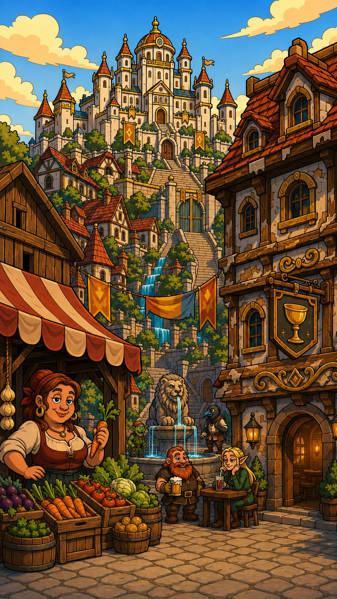

9:41

Stall keeper
Every hero starts small. Pick three first quests.
Tiny is fine. You can add more later.3 / 3
 Drink water1 min
Drink water1 min Short walk10 min
Short walk10 min Read 10 pages10 min
Read 10 pages10 min Wash my face2 min
Wash my face2 min 3 deep breaths1 min
3 deep breaths1 minReal breakfast15 min